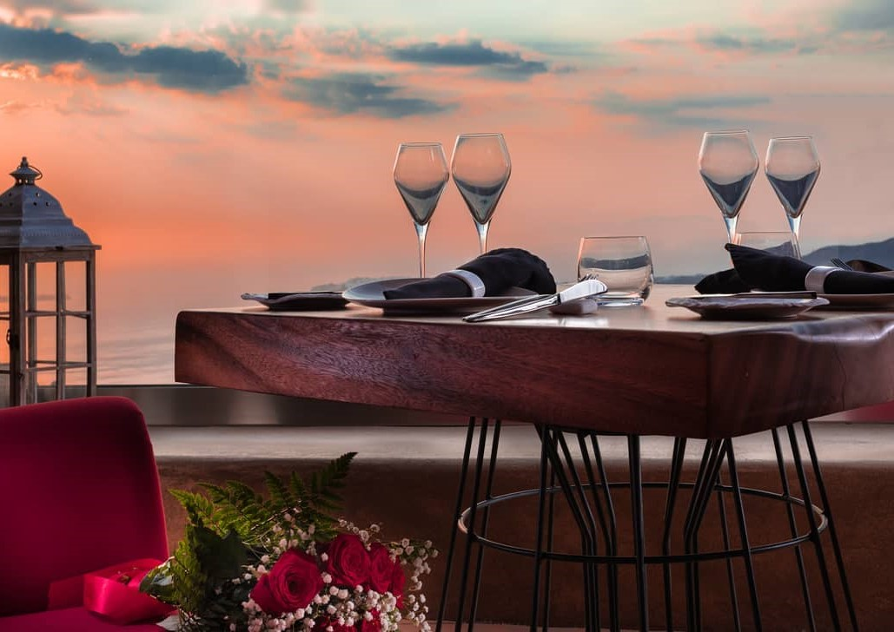
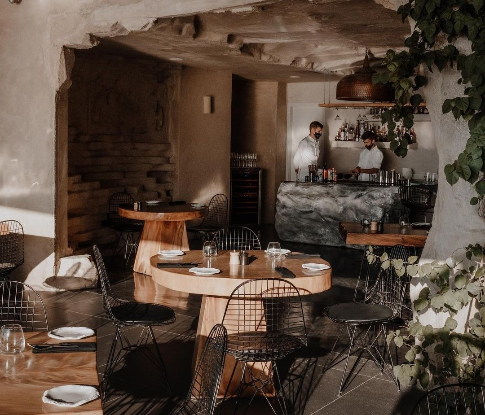
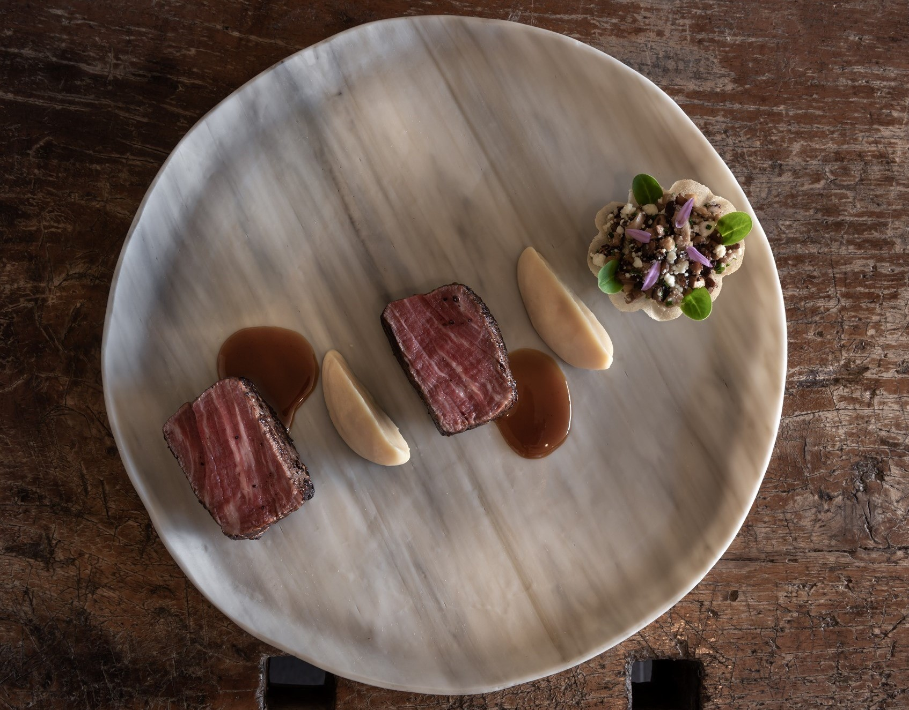

Explorez les délices méditerranéens de notre restaurant sur l'île enchanteresse de Santorin, où les saveurs marines et les traditions grecques se rencontrent harmonieusement.
Découvrez notre Carpaccio de poulpe, délicatement citronné et relevé d'herbes fraîches, ainsi que notre Pita de crevettes grillées, une fusion exquise de saveurs méditerranéennes dans un pain moelleux.
Plongez dans notre Symphonie sous-marine, un festin sensoriel mettant en valeur les trésors de la mer de Santorin. Pour une expérience authentique, savourez nos classiques grecs tels que la Moussaka et la Spanakopita.
Dans notre cadre chaleureux, chaque repas célèbre la culture et la passion pour la cuisine grecque, offrant une expérience gastronomique inoubliable à Santorin.
L’établissement se trouve à Eparchiaki Odos, Firon-Ias, Imerovigli 847 00, Grèce.



À propos de Throubi :Throubi, un trésor culinaire niché au cœur de la Grèce, offre une expérience immersive dans la cuisine authentique du pays. Son ambiance chaleureuse et son décor méditerranéen accueillent les convives dans un voyage de saveurs exquises. Chaque plat, préparé avec soin, témoigne de l'héritage gastronomique grec, offrant une expérience culinaire mémorable imprégnée de tradition et d'aventure. |
Spécialités :Throubi célèbre les délices de la cuisine grecque à travers une sélection minutieuse de plats locaux et de saison. Du Carpaccio de Poulpe à la Bougatsa dorée, chaque plat incarne l'authenticité et l'élégance rustique de la gastronomie hellénique. Une palette de saveurs exquises offre une expérience culinaire riche et diversifiée, captivant les sens à chaque bouchée. |
Évènements Gastronomiques :Throubi se distingue par ses événements gastronomiques uniques, attirant les chefs étoilés du monde entier pour célébrer l'excellence culinaire. Des dîners exclusifs, des ateliers interactifs et des dégustations de vins d'exception font partie de ces festivités. La cérémonie annuelle 'Throubi d'Or' récompense les talents les plus brillants de la gastronomie, promettant une odyssée gustative inoubliable où l'art de la cuisine atteint de nouveaux sommets. |